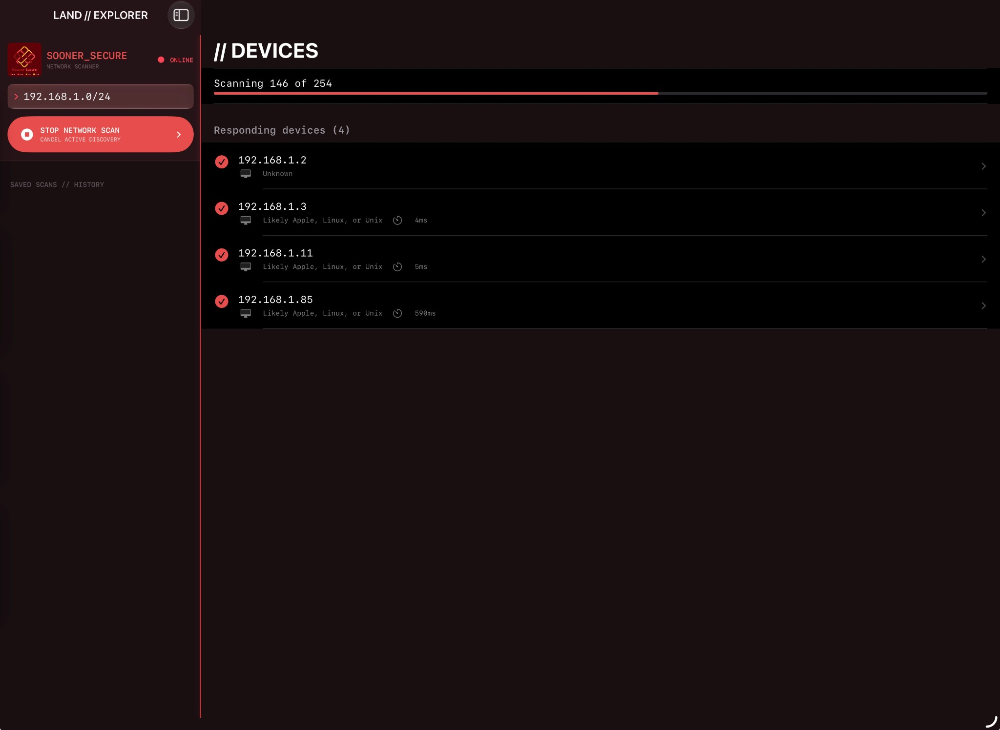

01 / DISCOVER
LOCAL NETWORK SCANNING
Scan your local subnet to identify devices that respond. Get a clearer picture of what's connected to the network around you.
HOST DISCOVERY ↗
Meet LAND, the local network scanner from Sooner Secure. Find responding devices, see which ports and services are live, and export what you discover. No complicated setup. Just the information you need. Open source, and available exclusively for iPad and macOS.

Network visibility without the unnecessary noise. LAND keeps the tools focused and the workflow simple.
Scan your local subnet to identify devices that respond. Get a clearer picture of what's connected to the network around you.
Go beyond the IP address. Inspect live ports and the services associated with them to better understand each device.
Take your findings with you. Export scan results to a CSV file for documentation, review, or your own analysis.
Built around a simple idea: understanding your own network shouldn't require a complicated toolkit.
Start with your local network range and launch a scan directly from your iPad or Mac.
Review discovered devices, inspect open ports, and identify available services.
Export the results as CSV so you can organize and work with the data your way.
LAND is open-source software developed by Sooner Secure ↗, a nonprofit advancing cybersecurity for all.
LAND costs $2 on the App Store. All proceeds directly support Sooner Secure and its work to make cybersecurity tools and knowledge more accessible.
SUPPORTED PLATFORMS: IPAD AND MACOS ONLY
VISIT SOONER SECUREOPEN SOURCE SOFTWARE
IPAD + MACOS ONLY
100% OF PROCEEDS SUPPORT SOONER SECURE
DEVELOPED BY A NONPROFIT // BUILT FOR EVERYONEQuestions, feedback, or support for LAND? Contact Sooner Secure directly.